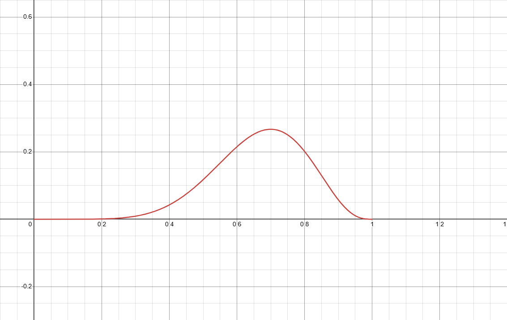
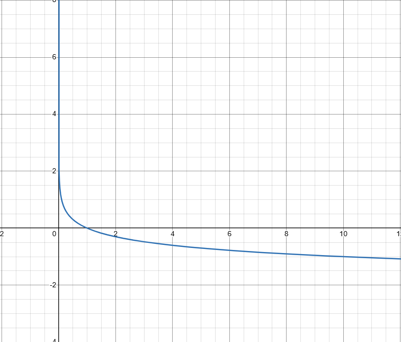

$D$는 실제와 $G$로 생성한 가짜에 올바른 레이블을 할당하는 확률[logD(x)]를 최대화하는 훈련을 한다.
$G$는 $D$와 반대로 $\log(1 - D(G(z)))$**를 최소화 하도록 훈련한다.
$\mathbb{E}_{x \sim p_{data}(x)}[\log D(x)]$는 실제 데이터 분포($p_{data}$)에서 뽑은 진짜 데이터($x$)의 결과값들의 평균값이다.
$\mathbb{E}_{z \sim p_z(z)}[\log(1 - D(G(z)))]$는 임의의 노이즈 분포($p_{z}$)에서 나온 무작위 결과 값($z$)의 평균값이다.
즉 $\min_G \max_D$는 $G$는 값을 최대한 작게, $D$는 값을 최대한 크게 만드는 것을 목표한다.
$V(D, G)$는 점수판으로서 $\min_G \max_D$의 최소최대 게임의 결과가 나오는 것 이다.
즉, $D$와 $G$의 경쟁을 나타내는 수식이
$\left( \prod_{i=1}^N D(x_i) \right) \times \left( \prod_{j=1}^M (1 - D(G(z_j))) \right)$ 가 될 때,
$D(x_i)$와 $(1 - D(G(z_j)))$의 값이 확률이므로 0~1사이 범위가 되어 계산 중 언더플로우가 발생한다.
예시로 $D(x_i)$와$(1 - D(G(z_j)))$가 0.5일때, 배치사이즈를 128로 가장하면
둘 모두 $\prod_{i=1}^{128} 0.5 = 0.5^{128} \approx 2.938 \times 10^{-39}$이므로
$0.5^{128} \times 0.5^{128} = 0.5^{256} \approx 8.636 \times 10^{-78}$가 나와 너무 작은 수로 인해 언더플로우가 발생한다.
$\sum_{i=1}^N \log D(x_i)$ + $\sum_{i=1}^N \log D(1-x_i)$ 를 이전과 같이 확률을 0.5, 배치사이즈를 128로 가장하면,
$\sum_{i=1}^{128} (-0.693) = \sum_{i=1}^N \log D(1-x_i) = -88.704$ 가 나오므로
어떠한 데이터 유실도 없이 완벽하게 계산되는 숫자가 나오게 된다.
시작 하기 전, 각각의 기호의 의미를 정확히 파악하고 넘어가야 한다.
위 수식은 $B$가 주어 졌을 때, $A$가 일어날 확률이다.
여기서 중요한 것은 $\mid$의 뒤 값은 상수이며, 앞의 값은 변수이다. 즉, $B$는 상수, $A$는 변수이다.
위 수식은 확률 $\theta$가 고정 되어진 상태에서 결과 $X$의 분포를 나타낸다.
$\theta$는 신경망의 관점에서 모든 가중치 및 편향의 집합을 통칭하는 기호가 된다.
여기서 상수로 $\theta$를 칭했다는 것은, 이미 기 학습 완료되어진 상태로
model.fit()가 끝난 후 model.predict()가 실행되어진 경우이다.
tf.GradientTape()외부에서 역전파를 하지 않는 상태 training=False로 훈련을 하지 않는 상태
총합은 무조건 1이다.
만약 $\theta$가 0.7일때를 가장하면
이 모델에 임의의 이미지를 넣었을 때 진짜라고 판단할 확률은 0.7, 가짜라고 판단할 확률은 0.3이다.
확률은 변수 $X$에 대해 모든 경우의 수를 더하면 반드시 1이 되야 한다.
확률은 동전의 특성을 알고 있을 때, 어떤 결과가 나올지 예측하는 것이다.
$P(X \mid \theta)$에서 $\theta$가 앞면이 나올 확률로 0.5이며,
$X$는 앞면이 3번, 7번, 5번 등 나올 수 있는 결과이다.
동전을 10번 던졌을 때, 만약 앞면이 7번 나왔다면 아래 식에 의거 앞면이 나올 확률은 11.7%이다.
우도는 $\theta$와 $X$의 위치가 바뀐 것으로, 결과를 토대로 확률을 역으로 추론 하는 것 이다.
신경망의 관점에서 데이터 $X$가 고정된 상태에서,
모델의 파라미터 $\theta$가 가질 수 있는 값들의 연속적인 척도이다.
결과적으로 데이터 $X$가 있을때 정답에 가장 가까운 $\theta$를 찾아 내는 것 이다.
training=True이며, tf.GradientTape()내부에서 우도를 측정하고 외부에서 $\theta$를 갱신 할 때이다. tf.GradientTape()이후 tape.gradient()를 호출하여 $\theta$의 방향성을 추출하고, optimizer.apply_gradients()로 $\theta$를 업데이트 하는 과정이다.
우도는 확률의 제약에서 자유로워 총 합이 1이 아니다.
수식에서 $L(\theta)$자체는 큰 의미를 가지지 않고, 핵심은 서로 다른 $\theta$값 사이 크기 비교에 있다
이 수치를 우도비라고 하며, $\theta_1$이 $\theta_2$보다 얼마나 정답에 가까운지 수치화 한다.
이 수치가 가장 큰 지점을 찾는 것이 최대 우도 추정이다.

우도는 앞서 확률과 다르게, x가 7이며 $\theta$가 변수이다.
예를들어 위 공식에 따르면
$\theta = 0.5$ 일 때 우도: $0.117$
$\theta = 0.7$ 일 때 우도: $0.267$
$\theta = 0.9$ 일 때 우도: $0.057$
여기서 $\theta=0 \lor \theta=1$일 때, $L(\theta) = \binom{10}{7} \theta^7 (1-\theta)^3$에서 0이 나오는 것이 맞으며,
$\theta$는 $0<=\theta<=1$ 이다.
함수의 결과인 $L(\theta)$의 크기 보단 과정인 $\theta$에 집중하여 적합한 $\theta$를 구하는 것이 우도의 핵심이다.
앞서 배운 우도이다.
다시 강조하자면, 이 수식에서 가장 지점에서 찾는 것이 최대 우도 추정이다.
아까 제시한 동전던지기 분류에 따라 그래프와 수식을 이용해 최대 우도 추정을 정리해보겠다.
그래프와 같이 $\theta = 0.7$일 때 우도 함수의 기울기가 0이 되는 것을 확인 할 수 있다.
만약 동전을 10번 던졌을 때 7번이 나왔다면 동전이 앞면이 나올 확률이 0.7이라는 것을
주장하는 것이 현재의 결과를 가장 잘 설명한다는 뜻이다.
즉 최대 우도 추정은 $L(\theta)$를 최대로 만드는 최적의 $\theta$를 찾아내는 것 이다.
텐서플로우에서는 optimizer가 미분값이 0이 되도록 $\theta$를 계속 조정한다.
확률에서 여러 사건이 동시에 일어날 확률인 우도는 각 사건의 확률을 곱하는 것으로 정의된다.
이 때 $\log$를 씌우게 되면 덧셈의 형태로 바뀌게 되는데 이는 곱셈보다 다루기 쉬우며
미분을 하여 최적값을 찾을 때 계산량이 극적으로 줄어들게 된다.
확률값 $P(x)$는 0과 1의 사잇값으로 데이터가 많아질수록 숫자가 작아져 언더플로우가 발생한다.
결과적으로 우도를 최대화 하는 $\theta$값을 찾는 것이 목표이며 이 것은
$\arg\max_{\theta} L(\theta \mid X) = \arg\max_{\theta} \log L(\theta \mid X)$로
$\log$를 씌우더라도 똑같은 값을 가지게 된다.

확률 변수 $X$의 특정 사건 $x_i$가 발생했을 때의 정보량 $I(x_i)$는 다음과 같이 정의된다.
확률 $P(x_i)$가 낮을수록 정보량은 커지며, 확률이 $1$인 사건의 정보량은 $0$이다.
어떤 사건이 얼마나 예기치 못한 것인지 (놀라운 것인지)를 정량화한 수치로 이해하면 쉽다.
확률 $P(x)$가 높을수록 정보량 $I(x)$는 작다.
즉, 자주 일어나는 사건일 수록 정보량은 작다는 것이다.
정보의 양은 항상 0보다 크거나 같다.
확정적으로 일어나는 사건의 정보량은 0이다.
독립적인 사건 $x, y$가 동시에 발생했을 때의 전체 정보량은 개별 정보량의 합과 같아야 한다.
우선 여러 사건이 동시에 일어날 확률을 알아보자.
이는 독립적인 사건 $P(x)$가 발생 했을 때, 그 상태에서 $y$가 일어날 확률 $P(y \mid x)$를 구하는 것 이다.
두 사건이 독립일 때, $P(y \mid x) = P(y)$가 성립하므로 아래 수식이 성립한다.
여기서 가법성을 다시 한번 살펴보면,
두 개의 독립적인 사건 $x, y$가 동시에 발생했을 때의 전체 정보량은 개별 정보량의 합과 같아야 한다.
이는 앞서 구한 $\prod_{i=1}^{n} P(x_i)$라는 확률은 곱해질 수록 작아지지만,
정보량은 결합될 수록 커져야 하기에 곱셈을 덧셈으로 바꾸어주어야 하는데
이 때 곱셈을 덧셈으로 바꾸는 유일한 함수가 $\log$이다.
다시 두개의 사건 $x,y$로 가정하여 아래의 정리를 살펴보자.
$P(x,y)=P(x)⋅P(y)$를 $P(x,y)=P(x) + P(y)$의 형태로 바꾸기 위해 $P(i)$에 $f(x)$를 씌웠을 때,
$f(P(x,y)) = f(P(x))⋅f(P(y))$의 형태가
$f(P(x) \cdot P(y)) = f(P(x)) + f(P(y))$를 만족하는 함수 $f(x)$는 $\log$뿐이라는 것 이다.
쉽게 말하자면 곱셈을 덧셈으로 바꾸는 함수가 $\log$가 유일하다.
즉, $f(P(x)) + f(P(y))$는 $f(P) = k \log P$의 형태를 띄게 된다.
여기서 확률 $P(x)$는 항상 0과 1사이의 값을 가지므로 $f(P)$는 항상 -값을 가진다.
그러나, 정보량이라는 것은 -일 수 없기에 우리는 관례적으로 -를 붙혀준다.
그렇게 탄생한 것이 자기 정보량의 공식이다.
이 수식은 사건이 일어날 확률 $P(x)$가 희박할 수록 정보량이 커지며
$P(x)$가 빈번하거나 반드시 일어 날 수록 정보량이 작아진다는 핵심을 가지고 있다.
$H(P)$는 확률분포 $P$에 대해서 사건 $x$ 하나를 뽑았을 때, 평균적으로 기대되는 정보의 양이다.
즉, 특정 사건 하나가 일어났을 때 얼마나 놀라운지 평균치로 이해하면 되며,
값이 높을 수록 예측하기 어렵고 골고루 퍼져있어 놀랍고,
낮을 수록 결과가 뻔하고 치우쳐져 지루한 것이다.
결국 딥러닝 학습 모델은 엔트로피(불확실성)을 낮추는 과정이며,
엔트로피가 높을 때 데이터의 특징을 잡지 못해 얻는 특징의 정보가 크고,
엔트로피가 낮을 때 데이터의 특징을 잘 잡아 정보량이 적으며,
최대 우도 추정을 통해 좋은 성능을 낸다.
* 둘 모두 동일한 수식
엔트로피가 얼마나 놀라운가? 라면,
교차 엔트로피는 정답$P$를 내 예측$Q$로 바라 보았을 때 얼마나 놀라운가? 이다.
$P(x)$는 실제 정답 분포로 보통 정답은 하나이므로 $[0, 1, 0]$ 과 같은 원-핫 벡터이다.
$-\log Q(x)$은 모델이 예측한 확률 $Q(x)$에 대한 정보량(놀라움)이다.
여기서, $P$와 $Q$가 완벽히 일치 할 때 교차 엔트로피는 이론적 최소값인 엔트로피$H(P)$에 도달한다.
실제로 일어난 값 $P$와 내가 예측한 값 $Q$가 가까울 수록 오차가 적어 정보량이 작아진다는 것이고
$Q$가 $P$가 다르면 다를 수록 오차가 크기에 정보량이 커진다는 것 이다.
즉, $P$가 일어 났을 때 내가 $P$가 일어날 확률 $Q$를 0.9라고 생각했다면 정보량(놀람)을 적게 가져가며
$P$가 일어 났을 때 내가 $Q$를 0.01이라고 생각했다면 정보량을 크게 가져간다.
1. 앞서 다루었듯 $Q(x)$를 정보량으로 더하기 위해 $\log$를 씌웠다.
2. 확률 $Q(x)$는 항상 0이상 1이하이다. 이 숫자에 $\log$를 취할 시 무조건 음수가 나오는데,
정보량은 항상 양수여야 하므로 -를 붙혀 양수로 바꾸어 주는 것 이다.
3. $-\log Q(x)$는 $Q$가 0에 가까울 수록 값이 기하 급수적으로 커진다.
즉, 절대 정답이 아니라고 확신 했던 것이 정답이라면
모델에게 무한대에 가까운 정보를 주어 가중치를 강력하게 수정하도록 한다.
반대로 정답에 가까울 수록 가중치를 약하게 주도록 한다.
결국 GAN의 수식도 교차 엔트로피와 최대 우도 추정의 확장이며,
판별자$D$와 생성자 $G$의 정보량을 조절하여 가중치를 조절한다.
그리고 $\log$를 통해 언더플로우를 방지하면서 모델이 값을 틀렸을 때 적절한 기울기 주기 위함이다.